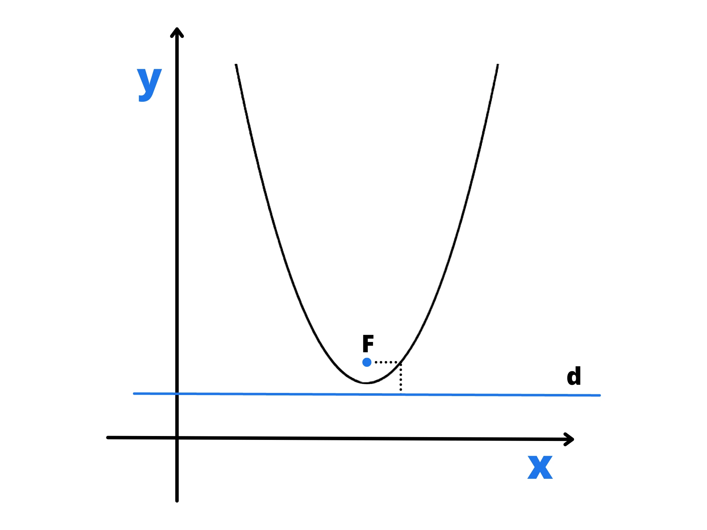
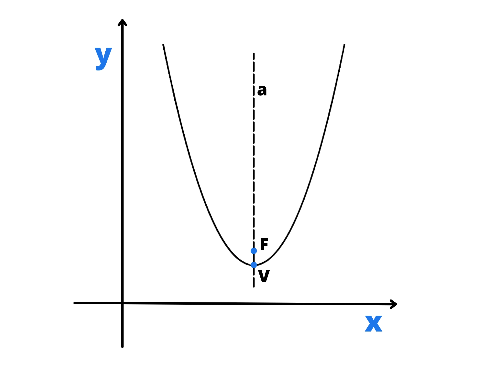
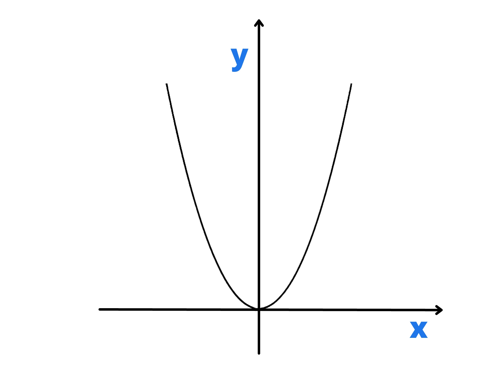
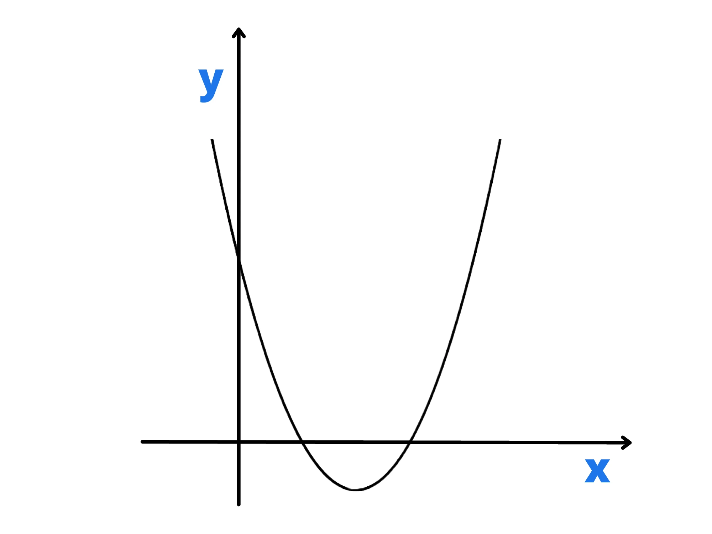

Presi un punto \(F\) detto fuoco e una retta \(d\) detta direttrice chiamiamo parabola la curva luogo dei punti equidistanti da \(F\) e da \(d\). Questo significa che, preso un punto qualsiasi della parabola, esso avrà la stessa distanza dal fuoco e dalla direttrice (ricorda che la distanza da un punto ad una retta è il segmento che parte dal punto e arriva perpendicolare alla retta stessa).
La retta passante per il fuoco e perpendicolare alla direttrice si chiama asse della parabola. Esso è anche l’asse di simmetria della parabola. Infatti, se prendiamo un punto qualsiasi della parabola esisterà sicuramente un altro punto simmetrico al primo rispetto all’asse. Chiamiamo infine vertice della parabola il punto di intersezione della parabola con l’asse e lo indichiamo con la lettera \(V\).
In generale una parabola si indica con una lettera greca minuscola, come ad esempio \(\alpha\) (alfa), \(\beta\) (beta), \(\gamma\) (gamma), etc... In geometria analitica interessa lo studio delle parabole sul piano cartesiano. Iniziamo analizzando alcuni casi particolari
La parabola è descritta da un'equazione di secondo grado, ed è una funzione solo in caso di asse parallelo all'asse \(x\)
Nello studio delle parabole (e più in generele in tutta la geometria analitica) interessa trovare una relazione che permette di riconoscere una parabola da un altra. Questa relazione prende il nome di equaizione di una parabola. Cerchiamo di trovare l’equazione di una generica parabola con asse coincidente all’asse delle \(y\) e con vertice nell’origine. Per iniziare possiamo notare che il fuoco della parabola è un punto dell’asse delle \(y\) e per questo ha coordinate \((0, f)\), con \(f\neq 0\).
La direttrice per definizione è perpendicolare all’asse della parabola e per questo è parallela all’asse delle \(x\). Quindi, la direttrice interseca l’asse delle \(y\) in un punto \(D\) e questo, visto che il vertice deve essere equidistante dal fuoco e dalla direttrice, ha coordinate \((0;-f)\). L’equazione della direttrice sarà quindi
\(y = -f\)
Ora prendiamo un generico punto della parabola \(A(x,y)\) e cerchiamo le distanze \(\overline{AF}\) e \(\overline{AH}\) rispettivamente dal fuoco e dalla direttrice, dove \(H\) è il piede della distanza che parte da \(A\).
\(\overline{AF}=\)\( \sqrt{(x-0)^2+(y-f)^2} =\)\( \sqrt{x^2+(y-f)^2}\)
\(\overline{AH}= |y+f|\)
Per definizione di parabola queste due distanze devono essere uguali:
\(\sqrt{x^2+(y-f)^2} = |y+f|\)
\(\longrightarrow x^2+(y-f)^2 = (y+f)^2\) \( \longrightarrow \) \(x^2-4yf=0\)
Ora isoliamo la \(y\) e ricaviamo l’equazione \(\begin{align}y= \frac{1}{4f}\cdot x^2\end{align}\). Per semplificare un po’ l’equazione, poniamo \(\begin{align}a=\frac{1}{4f}\end{align}\) e otteniamo
\(y=ax^2\)
che è l’equazione generica di una parabola con asse coincidente con l’asse delle e con vertice nell’origine. Per concludere troviamo alcune formule significative che potrebbero risultare utili nei problemi.
Partendo dalla relazione \(\begin{align}a=\frac{1}{4f}\end{align}\) otteniamo \(\begin{align}f=\frac{1}{4a}\end{align}\) e da questa possiamo ricavare le coordinate del fuoco e l'equazione della direttrice:
Coordinate del fuoco $$ \begin{align} F\bigg(0; \frac{1}{4a}\bigg)\end{align} $$
Equazione della direttrice $$ \begin{align} d=-\frac{1}{4a}\end{align} $$.
Da questa dimostrazione deduciamo che ogni punto della parabola verifica l’equazione \(y=ax^2\). Allo stesso modo si può dimostrare l'inverso, ovvero che tutti i punti che verificano l’equazione appartengono alla parabola e che questi sono i soli che appartengono alla parabola.
Una parabola con equazione \(y=ax^2\) che ha la \(a>0\), avrà per forza la \(y \geq 0\) e quindi tutti i suoi punti (a eccezione del vertice) si troveranno al di sopra dell’asse delle \(x\), e quindi saranno situati nel primo e nel secondo quadrante. Una parabola di questo tipo ha anche \(f>0\) e quindi anche il fuoco si troverà sul semiasse positivo delle \(y\): si dice che la parabola volge la sua concavità verso l'alto.
Analogamente, una parabola di equazione \(y=ax^2\) che ha la \(a>0\), avrà per forza \(y \leq 0\) e quindi tutti i suoi punti (a eccezione del vertice) si troveranno al di sotto dell’asse delle \(x\), e quindi saranno situati nel terzo e nel quarto quadrante. Una parabola di questo tipo ha anche \(f < 0\) e quindi anche il fuoco si troverà sul semiasse negativo delle : si dice che la parabola volge la sua concavità verso il basso.
Nel caso in cui \(a\neq0\) si avrebbe l’equazione \(y=0\), che è l’equazione dell’asse delle \(x\). In questo caso si dice che la parabola è degenere. In generale tutte le rette sono considerate parabole degeneri.
Alle scuole superiori vengono affrontate soltanto particolari tipologie di parabole, ovvero quelle con asse parallelo all'asse \(y\) e quelle con asse paralleo all'asse \(x\). In questa sezione parleremo della prima categoria e analizzeremo la loro equazione.
Si può dimostrare che una parabola con asse parallelo all'asse delle ordinate ha equazione
\(y=ax^2+by+c\).
Da essa possiamo ricavare le coordinate del vertice:
\(\begin{align} V\bigg(-\frac{b}{2a}; -\frac{\Delta}{4a} \bigg) \end{align} \)
dove \(\Delta\) si legge delta ed è semplicemente quello contenuto all'interno della formula risolutiva delle equazioni di secondo grado, ovvero \(b^2-4ac\).
Un'altra formula molto utile nella risoluzione degli esercizi è l'equazione della parabola partendo dalle coordinate del vertice. Se chiamiamo con \((x_v,y_v)\) le coordinate del vertice, vale la seguente relazione:
\(y-y_v=a(x-x_v)^2\)
Esempio: Trova l'equazione della parabola di vertice \((3,4)\) che si ottiene traslando la parabola \(y=2x^2\).
Notiamo che l'esercizio ci chiede di trovare la parabola congruente a quella di equazione \(y=2x^2\) che ha il vertice traslato (traslato significa semplicemente spostato ). Quello che ci serve per risolvere il problema è la relazione vista in precedenza, ovvero \(y-y_v=a(x-x_v)^2\). Infatti abbiamo sia le coordinate del vertice, sia la \(a\) che è uguale perché le parabole sono congruenti.
\(y-4=2(x-3)^2 \longrightarrow\) \(y=2x^2-12x+22\)
A questo punto possiamo citare altre due formule molto utili nella risoluzione degli esercizi su questo tipo di parabole:
Equazione dell'asse $$ \begin{align} x=-\frac{b}{2a}\end{align} $$
coordinate del fuoco $$ \begin{align} F\bigg(\frac{-b}{2a}, \frac{1-\Delta}{4a}\bigg)\end{align} $$
Prima di concludere la sezione è utile analizzare in modo dettagliato il significato della quantità \(\Delta=b^2-4ac\). Essa viene detta delta della parabola e, conoscendo il segno di \(\Delta\) si può capire quante intersezioni ha la parabola con l'asse delle \(x\):
se \(\Delta > 0\) le intersezioni sono due;
se \(\Delta = 0\) c'è un'unica intersezione (la parabola è tangente all'asse delle \(x\));
se \(\Delta < 0\) non ci sono intersezioni.
Le parabole di questo tipo hanno equazione
\(y=ax^2+bx+c\)
In questo caso il parametro \(a\) ci indica se la parabola è rivolta verso sinistra \((a > 0)\) o se è rivolta verso destra \((a < 0)\). In generale, le sue caratteristiche sono molto simili a quelle delle parabole studiate in precedenza. Per questo citiamo solo le formule che ci interessano:
Coordinate del vertice $$ \begin{align} V \bigg( -\frac{\Delta}{4a}, -\frac{b}{2a}\bigg) \end{align} $$
Coordinate del fuoco $$ \begin{align} F \bigg( \frac{1-\Delta}{4a}, \frac{-b}{2a} \bigg) \end{align} $$